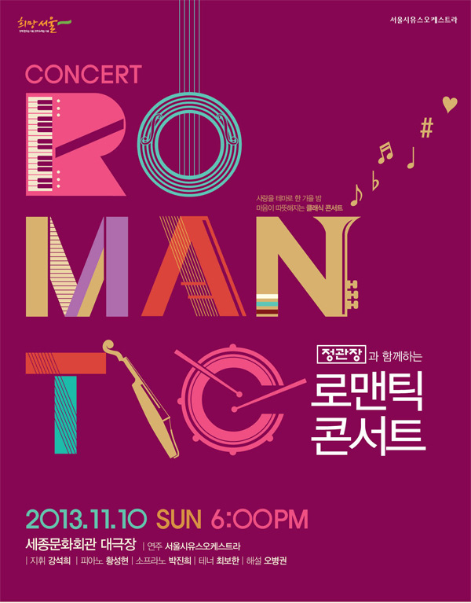

<Romantic Concert> of Sudnay Night
11월 11일의 전날을 의식한 제목의 콘서트일지도 모르겠다는 생각을 하면서 가벼운 마음으로 콘서트를 보러 갔다. 사실 뛰어가지 않았다면 몇 곡을 듣지 못할 뻔 했다. 급하게 들어가 안내를 받고 자리에 앉아 숨을 몰아 쉬고 있을 때 예상치 못하게 해설자가 나타나 이런저런 이야기를 시작했다. 이날 해설 내용 자체가 나쁘진 않았지만 협연자 프로필과 박수 치는 법 설명이 곡 해설보다 길어 다소 지루하지 않았나 싶다.
첫 번째 곡으로 베르디의 오페라 <라 트라비아타> 서곡이 연주됐다. 짧지만 처음부터 끝까지 루즈하게 흐르는 현악기의 선율과 중간에서 바이올린이 연주하는 느린 춤곡 같은 느낌의 부분이 아주 편안했다. 곡이 미처 짧아서인지 박수가 늦게 터져서 조금 당황스러웠다.
다음으로 번스타인의 뮤지컬 <웨스트사이드스토리> 메들리가 나왔다. 레너드 번스타인은 물론 현대 음악가들 중 거장이라 불리지만 현대음악의 발전에 기여했다는 말보다는 고전음악의 대중화로 더 잘 알려지지 않았다 싶다. 웨스트사이드스토리는 몇 년 전에 TV에서 방영하는 뮤지컬 영화 장면을 잠깐 본 적이 있었는데 그 이름도 까먹고 있었다가 이날 음악을 듣고 바로 생각이 나서 깜짝 놀랐다. 음악이 흐르는 중간 오케스트라 뒤의 벽 전체가 거대한 스크린 역할을 하면서 영화 장면을 보여줬는데, 이날 무슨 영상이 나오든 음악과의 싱크가 전혀 맞지 않아 여러모로 불편했다. 초반에는 바이올린이 높은 음역대에서 무언가를 기다리는 듯이 흐르다가 멎고, 드럼이 크레센도로 새로운 주제를 연다. 금관악기와 드럼, 심벌즈, 실로폰이 비트감 있고 신나게 꾸미는 이 중간 부분은 이 곡의 백미라 느껴진다. 끝부분에서는 트롬본이 웅장하게 엔딩을 장식한다.
프로그램에 있는 거쉬인의 <랩소디 인 블루> 하나 보고 콘서트를 갔다고 해도 과언이 아닌데, 기대를 많이 하면 역시 안 될 듯하다. 해설자가 곡 시작 전에 시작 부분에서 클라리넷이 멋있는 글리산도를 한다는 등의 스포일러를 서슴지 않아서, 괜히 긴장하면서 본 것이 화근이었던 듯하다. 거쉬인의 작곡에 대한 천부적인 재능을 보여주는 곡임이 확실하다. 일찍 죽지 않았다면 더 다양한 미국 현대음악들이 탄생되지 않았을까 싶다. 시작 부분의 클라리넷 트릴과 글리산도는 이 음악을 알리는 데 당연히 1등 공신 역할을 한 듯하다. 평소에는 구분해서 듣기 쉽지 않은 클라리넷이 멋진 음색으로 곡을 열고, 트럼펫―확실하진 않지만―이 살짝 너덜너덜한 느낌으로 재미있게 곡 전체의 서곡 역할을 해준다. 그리고 피아노 솔로가 능청스럽게 나온다. 곡 전체가 정말 화성적이든 주제든 간에 다양하게 구성되어 있으면서도 귀에 쏙쏙 들어오는 반복적인 멜로디와 주제간의 연결이 조화롭고 재치 있어서 그 변화를 알아채기 쉽지 않았다. 재즈의 큰 매력이 그대로 이 랩소디에 옮겨졌다고 생각된다. 중간 부분에서 드럼의 빠른 연주를 바탕으로 웅장하게 울리는 부분에서는 왠지 모르게 감동적이었다. 뜬금없지만 톰과 제리가 극적인 화해를 이루고 세상이 평화로워지면 분위기가 그렇지 아닐까 싶다. 피아노가 생각보다 돋보이지 않고 오케스트라와 따로 논다는 느낌이 들고, 끝부분에서 잠깐 타악기의 박자가 어긋나면서 다소 아쉬운 점도 있었다.
인터미션이 지나고 다시 베르디의 오페라 <라 트라비아타> 중 3막의 간주곡이 연주됐다. 서곡과 다름없이 길지 않고 가는 선율로 구성된 볼륨이 작은 곡이다. 큰 기복 없이 정말 편안한 곡이라서, 마치 음식 먹기 전에 입가심으로 마시는 깨끗한 물 느낌이었다.
이어서 푸치니의 오페라 <라 보엠>에 나오는 아리아 두 곡이 이어졌다. 첫 곡은 테너의 아리아인 ‘그대의 찬 손’이다. 물론 대사가 온통 이탈리아어기 때문에 전혀 알아들을 수 없었으나, 미미에게 반한 시인의 고백을 최보한 테너가 무뚝뚝하거나 너무 똑 부러지게 표현하지 않고 감정을 잘 나타냈다는 점 정도는 알 수 있었다. 해설자가 정황 설명은 해 주었기 때문에 곡이 어떤 상황에서 전개되는지 이해한 점은 다행이었다.
그리고 그 테너의 아리아에 대한 답변으로 소프라노가 ‘내 이름은 미미’라는 아리아를 열창했다. 원래 이름은 미미가 아니고 루치아고, 직업이 수를 놓는 일이라는 해설자의 설명 이외에는 역시 아는 것이 없었다. 아리아라 그런지 오케스트라 자체가 드러나는 부분이 많지 않았지만, 서정적이거나 극적인 부분에서는 그에 맞는 느낌을 살리면서 앞으로 나와주었다. 이날 소프라노 박진희를 보러 온 사람이었는지 아닌지는 알 수 없지만, 박수의 시작과 함께 엄청난 크기의 소리로 브라바를 외쳐서 재미있었다.
그리고 번스타인의 뮤지컬 <웨스트 사이드 스토리>하면 떠오르는 장면들 중의 하나인 발코니 장면의 ‘발코니 듀엣’이 이어졌다. 감미롭고 밝은 음악과 함께 달빛으로 가득 찬 분위기의 발코니에서 속삭이는 마리아와 토니의 사랑이 느껴져야 하는데, 사실 이날 곡은 완전 성악곡이면서 살짝 느려서 내가 원래 이 장면에 가지고 있는 느낌인 더 밝고 무언가 총명하고 가벼운 분위기가 없어서 다소 아쉬웠지만 묵직한 느낌도 그리 나쁘지는 않았던 것 같다.
마지막으로는 차이코프스키의 <로미오와 줄리엣> 환상 서곡이 온전한 오케스트라의 연주로 펼쳐졌다. 사실 이 곡이 나오면서 뒤의 영상으로 <로미오와 줄리엣> 발레 영상이 나왔는데 전혀 연주와는 따로 진행되어 곡에 별로 집중하지 못했다. 지휘자가 분명히 영향을 받았을 것이다. 일부러 프로그램 상 가볍고 짧은 곡을 이어오다가 마지막 곡으로는 다소 고전적인 교향시를 넣은 것으로 보이는데, 로맨틱한 구성은 아니었다. 물론 연주는 좋았다. 두 번의 몬태규와 캐플릿 가문의 칼 싸움 부분은 심벌즈와 함께 박진감 있는 연주로 잘 표현되었다. 이날 내 컨디션이 안 좋았는지는 모르겠지만 오케스트라가 너무 조심하는 듯한 느낌이 계속 들어서 조금만 더 피곤했다면 졸았을 지도 모르겠다. 박진감이 넘치는 부분에서는 정말 박진감 넘치게 나와주고 또 필요할 때는 들어가는 것이 부족하지 않았다 생각된다. 물론 해설자의 말대로 따뜻한 스타일을 가진 이번 지휘자의 의도였을지도 모르지만, 음악에 조예가 깊지 않은 나를 포함한 대중에게는 명료한 전달이 더 흥미진진하지 않을까 싶다.
서울시유스오케스트라 공연은 프로그램 구성이 매번 알차고 공연 내용도 기대보다 좋아서 가벼운 마음으로 보기 좋다. 익숙히 알려진 고전부터 초연되는 현대음악까지 다양한 음악을 아우르기 때문에 더 즐기기 쉬운 듯하다. 이 날 공연 역시 아주 친절하고 친근하게 관객에게 손을 내밀었지만, 그렇다고 내용이 너무 쉽다거나 하지 않고 많이 유익해서 즐거운 시간을 보냈다.
Program
서울시유스오케스트라 로맨틱 콘서트 (세종문화회관)
- Verdi, Opera <La Traviata> Overture
- Bernstein, Musical Westside Story Medley
- Gershwin, Rhapsody in Blue
- Verdi, Act III, Prelude from <La Traviata>
- Puccini, 'Che gelida manina' from Opera <La Boheme> [테너: 최보한]
- Puccini, 'Mi chiamano Mimi' from Opera <La Boheme> [소프라노: 박진희]
- Bernstein, Balcony Duet from Musical <Westside Story> [듀엣-소프라노: 박진희, 테너: 최보한]
- Tchaikovsky, <Romeo and Juliet> Fantasy Overture